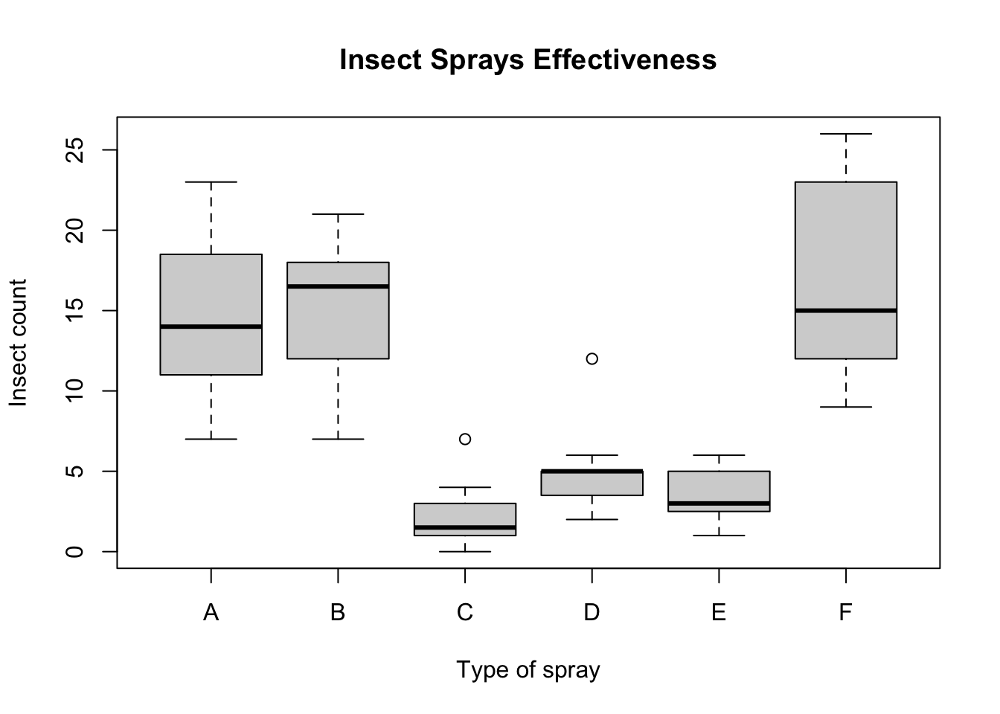
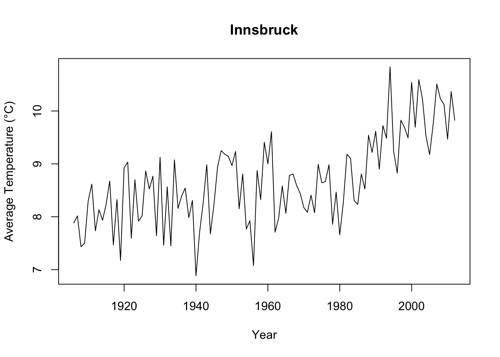
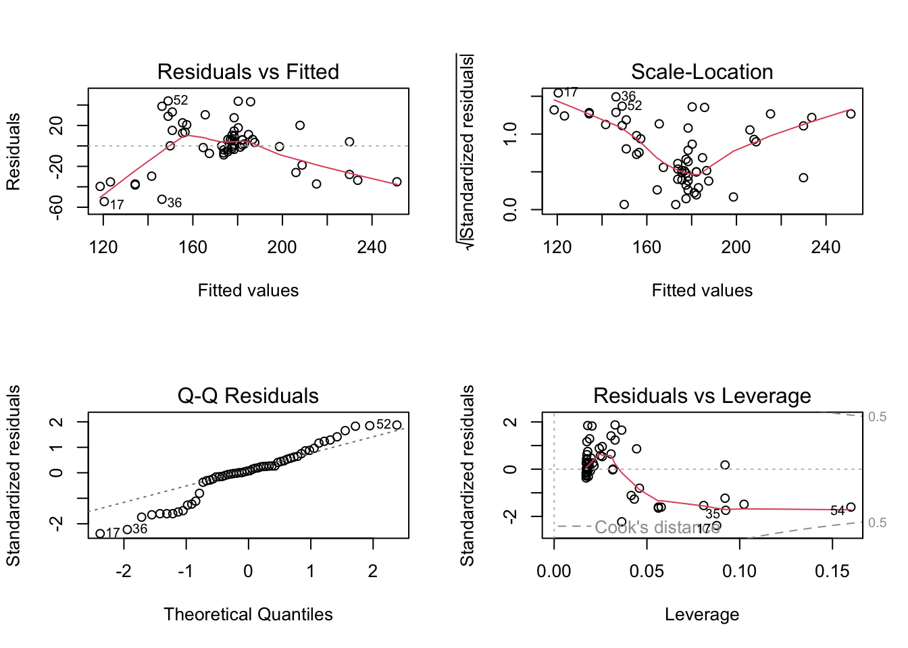
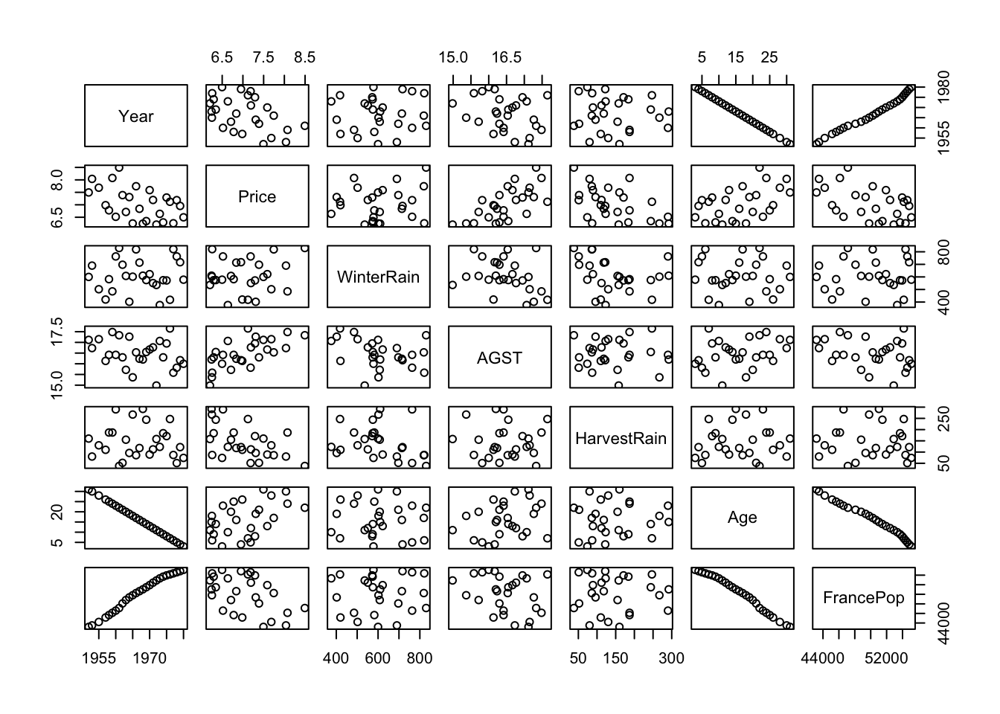

species island bill_length_mm bill_depth_mm flipper_length_mm body_mass_g sex
Adelie :152 Biscoe :168 Min. :32.10 Min. :13.10 Min. :172.0 Min. :2700 female:165
Chinstrap: 68 Dream :124 1st Qu.:39.23 1st Qu.:15.60 1st Qu.:190.0 1st Qu.:3550 male :168
Gentoo :124 Torgersen: 52 Median :44.45 Median :17.30 Median :197.0 Median :4050 NA's : 11
Mean :43.92 Mean :17.15 Mean :200.9 Mean :4202
3rd Qu.:48.50 3rd Qu.:18.70 3rd Qu.:213.0 3rd Qu.:4750
Max. :59.60 Max. :21.50 Max. :231.0 Max. :6300
NA's :2 NA's :2 NA's :2 NA's :2
year
Min. :2007
1st Qu.:2007
Median :2008
Mean :2008
3rd Qu.:2009
Max. :2009
summary(penguins[["sex"]])
female male NA's
165 168 11
penguins_f = penguins[penguins[["sex"]] =="female",]penguins_m = penguins[penguins[["sex"]] =="male",]# Alternative mit subset():penguins_f =subset(penguins, sex =="female")penguins_m =subset(penguins, sex =="male")
Übung 4
x =seq(1, 100, 2)summary(x) # enthält alles außer sd
Min. 1st Qu. Median Mean 3rd Qu. Max.
1.0 25.5 50.0 50.0 74.5 99.0
# A tibble: 33 × 9
Region Schadstoff Einheit CRF_Code CRF_Sektor Quelle Datenstand Jahr Werte
<chr> <chr> <chr> <chr> <chr> <chr> <dbl> <dbl> <dbl>
1 AT CO2 t CO2 0 Total (without LULUCF) OLI 2023 (1990-2022) 15012024 1990 62183904.
2 AT CO2 t CO2 0 Total (without LULUCF) OLI 2023 (1990-2022) 15012024 1991 65782394.
3 AT CO2 t CO2 0 Total (without LULUCF) OLI 2023 (1990-2022) 15012024 1992 60282904.
4 AT CO2 t CO2 0 Total (without LULUCF) OLI 2023 (1990-2022) 15012024 1993 60708862.
5 AT CO2 t CO2 0 Total (without LULUCF) OLI 2023 (1990-2022) 15012024 1994 61083354.
6 AT CO2 t CO2 0 Total (without LULUCF) OLI 2023 (1990-2022) 15012024 1995 64060755.
7 AT CO2 t CO2 0 Total (without LULUCF) OLI 2023 (1990-2022) 15012024 1996 67405241.
8 AT CO2 t CO2 0 Total (without LULUCF) OLI 2023 (1990-2022) 15012024 1997 67301823.
9 AT CO2 t CO2 0 Total (without LULUCF) OLI 2023 (1990-2022) 15012024 1998 66936726.
10 AT CO2 t CO2 0 Total (without LULUCF) OLI 2023 (1990-2022) 15012024 1999 65667804.
# ℹ 23 more rows
Übung 7
by(InsectSprays$count, InsectSprays$spray, mean)
InsectSprays$spray: A
[1] 14.5
------------------------------------------------------------------------------------------
InsectSprays$spray: B
[1] 15.33333
------------------------------------------------------------------------------------------
InsectSprays$spray: C
[1] 2.083333
------------------------------------------------------------------------------------------
InsectSprays$spray: D
[1] 4.916667
------------------------------------------------------------------------------------------
InsectSprays$spray: E
[1] 3.5
------------------------------------------------------------------------------------------
InsectSprays$spray: F
[1] 16.66667
boxplot( count ~ spray,data=InsectSprays,xlab="Type of spray",ylab="Insect count",main="Insect Sprays Effectiveness")

Übung 8
library(readr)df =read_delim("temperature.csv")df[["Average"]] =rowMeans(subset(df, select=-YEAR))with( df,plot(x=YEAR,y=Average,type="l",main="Innsbruck",xlab="Year",ylab="Average Temperature (°C)" ))

Übung 9
(mtcars1 =subset(mtcars, mpg >=20& hp >=110& cyl ==6))
Pearson's product-moment correlation
data: x and y
t = 1.9281, df = 98, p-value = 0.05673
alternative hypothesis: true correlation is not equal to 0
95 percent confidence interval:
-0.005442771 0.373569864
sample estimates:
cor
0.1911797
Die Ausgabe der Funktion cor.test(x, y) zeigt, dass \(r = .191\) und \(p = .057\). Da \(p > .05\), ist die Korrelation nicht signifikant.
Call:
lm(formula = height ~ mass, data = df)
Residuals:
Min 1Q Median 3Q Max
-54.448 -7.234 1.784 13.259 44.028
Coefficients:
Estimate Std. Error t value Pr(>|t|)
(Intercept) 104.8056 8.7549 11.971 < 2e-16 ***
mass 0.9201 0.1082 8.508 1.14e-11 ***
---
Signif. codes: 0 '***' 0.001 '**' 0.01 '*' 0.05 '.' 0.1 ' ' 1
Residual standard error: 23.89 on 56 degrees of freedom
Multiple R-squared: 0.5638, Adjusted R-squared: 0.556
F-statistic: 72.38 on 1 and 56 DF, p-value: 1.138e-11
layout(matrix(1:4, nrow=2))plot(model)

Die Steigung von 0.9201 ist signifikant mit \(p = 1.14 \cdot 10^{-11}\). Das Regressionsmodell ist ebenfalls signifikant (\(F(1, 56) = 72.38\), \(p = 1.14 \cdot 10^{-11}\)). Aus der Grafik “Residuals vs Fitted” sieht man, dass die Linearitätsannahme vermutlich verletzt ist (die rote Linie ist keine Gerade um Null). Außerdem sind die Residuen nicht normalverteilt, was aus dem QQ-Plot ersichtlich ist (vor allem die kleineren Werte weichen sehr stark von einer Normalverteilung ab).
Übung 33
set.seed(4)x =rnorm(500, mean=-4, sd=5)y =rnorm(500, mean=-2, sd=3) +0.05* xcor.test(x, y, method="spearman") # rho = 0.1049, nicht signifikant da p > 0.01
Spearman's rank correlation rho
data: x and y
S = 18647836, p-value = 0.019
alternative hypothesis: true rho is not equal to 0
sample estimates:
rho
0.1049003
Übung 34
result = (exp(2.74) +sin(0.55* pi +1.23)) /sqrt(1+8.3^1.4)round(result, 3)
Rows: 27 Columns: 7
── Column specification ────────────────────────────────────────────────────────────────────────────────────────────────
Delimiter: ","
dbl (7): Year, Price, WinterRain, AGST, HarvestRain, Age, FrancePop
ℹ Use `spec()` to retrieve the full column specification for this data.
ℹ Specify the column types or set `show_col_types = FALSE` to quiet this message.
pairs(wine) # Year und Age sind perfekt korreliert -> entferne Year

model =lm(Price ~ WinterRain + AGST + HarvestRain + Age + FrancePop, data=wine[, -1])summary(model)
Call:
lm(formula = Price ~ WinterRain + AGST + HarvestRain + Age +
FrancePop, data = wine[, -1])
Residuals:
Min 1Q Median 3Q Max
-0.46541 -0.24133 0.00413 0.18974 0.52495
Coefficients:
Estimate Std. Error t value Pr(>|t|)
(Intercept) -2.343e+00 7.697e+00 -0.304 0.76384
WinterRain 1.153e-03 4.991e-04 2.311 0.03109 *
AGST 6.144e-01 9.799e-02 6.270 3.22e-06 ***
HarvestRain -3.837e-03 8.366e-04 -4.587 0.00016 ***
Age 1.377e-02 5.821e-02 0.237 0.81531
FrancePop -2.213e-05 1.268e-04 -0.175 0.86313
---
Signif. codes: 0 '***' 0.001 '**' 0.01 '*' 0.05 '.' 0.1 ' ' 1
Residual standard error: 0.293 on 21 degrees of freedom
Multiple R-squared: 0.8278, Adjusted R-squared: 0.7868
F-statistic: 20.19 on 5 and 21 DF, p-value: 2.232e-07
# Signifikante Prädiktoren: WinterRain, AGST, HarvestRain# R² = 0.8278# Das Modell ist insgesamt statistisch signifikant (p = 2.232e-07)lm.beta(model)
Call:
lm(formula = Price ~ WinterRain + AGST + HarvestRain + Age +
FrancePop, data = wine[, -1])
Standardized Coefficients::
(Intercept) WinterRain AGST HarvestRain Age FrancePop
NA 0.2344909 0.6382419 -0.4418232 0.1789302 -0.1322963
# Den größten Einfluss hat AGST, gefolgt von HarvestRain, gefolgt von WinterRain.